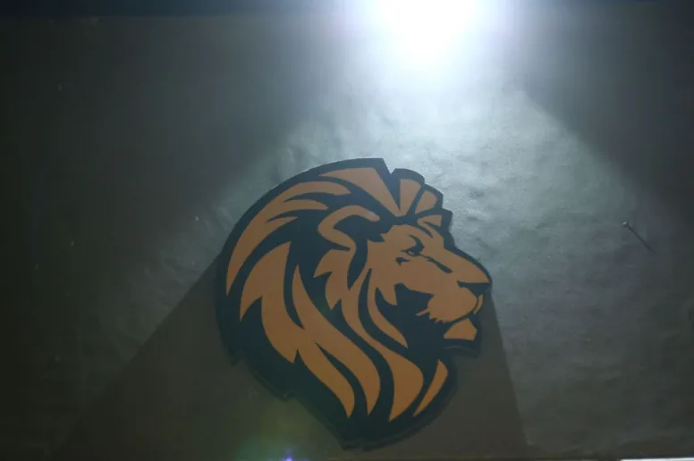

Credo means “I believe.”
The word comes from the Latin for creed — belief. It is why the hashtag is #WeBelieve: belief in every student, their potential, and the future they are destined to create.

A social change, one student at a time.
Credo School aspires to bring about a social change through the words and deeds of students which personify consideration for every person, integrity and an all-round discipline in daily life.
The examples set by teachers and management are meant to build character and nurture personality — steering students to academic success while instilling leadership, communication and resilient life skills.

Three values. Every campus.
Since 2017.
Credo remains a place that dares to be a little different. Its academic focus and personal attention to each student are what make it distinct.
- 2017
Credo School & College System founded
Credo College opens on Main Abul Hasan Isphahani Road with Cambridge AS & A Level — Cambridge centre P6012.
- O LEVELS
Credo School, Middle & O Levels
Grades 6–11 at E-131, Block 7 — Cambridge centre PK741 — with the no-tuition policy at its heart.
- EARLY YEARS
Credo Preschool & Primary
Pre-nursery to Grade 5 at D-175 — a nurturing start, with learner profiles for every child.
- GIRLS CAMPUS
Credo School Girls Campus
A campus tailored to the needs of girls at Plot D-145 — “Inspiring Girls, Empowering Futures.”
- 2027–29
Early Bird Admissions open
The newest session welcomes applications across the network.

A give-back time to society.
Air Vice Marshal (R) Syed Razi-ul-Hasan Nawab, HI-MDean & DirectorThe founding members.
Teachers first. Each still leads a subject department across the network.
Management
Where Credo graduates go.
Credo College graduates have been placed at leading universities in Pakistan and around the world.